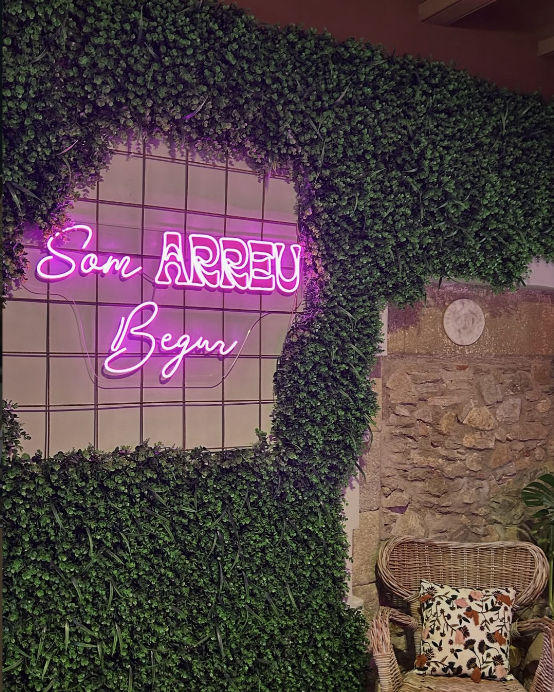
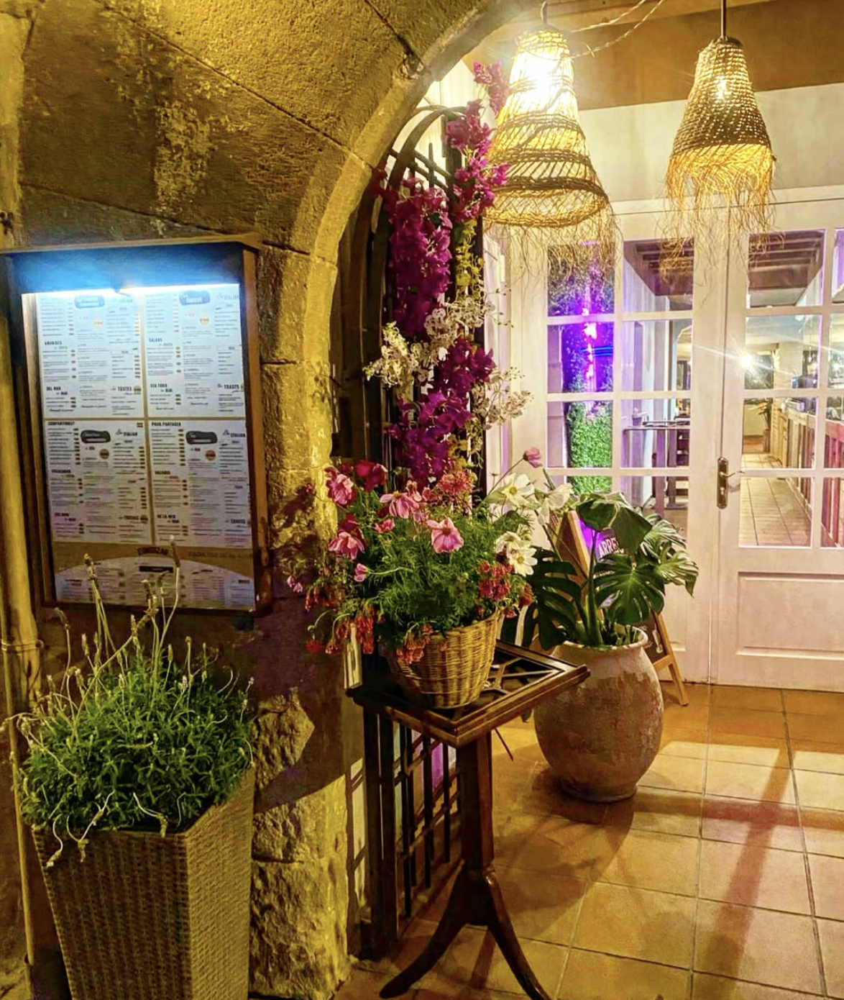
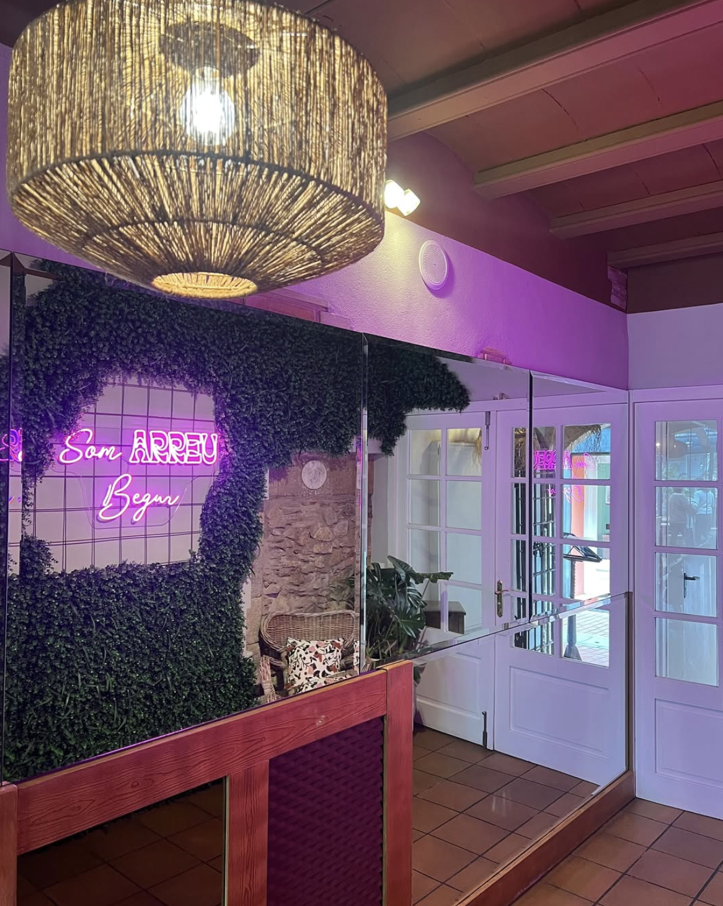
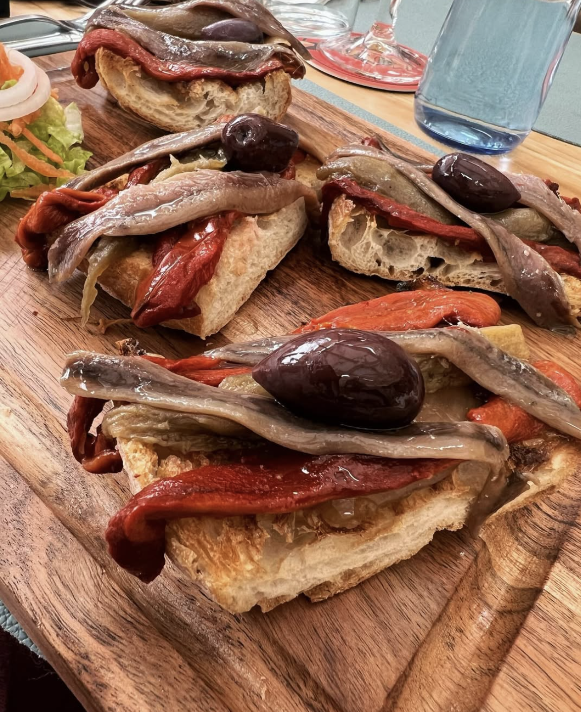
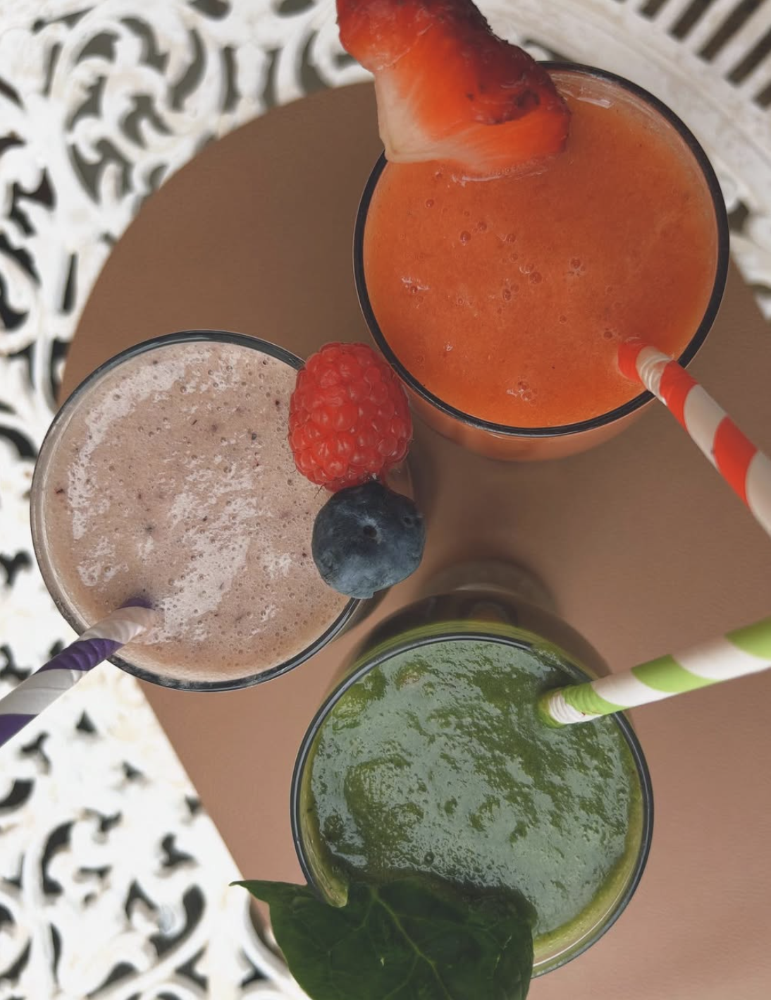
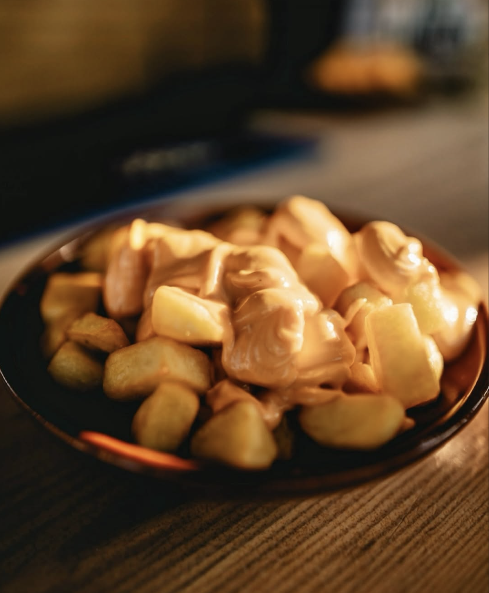
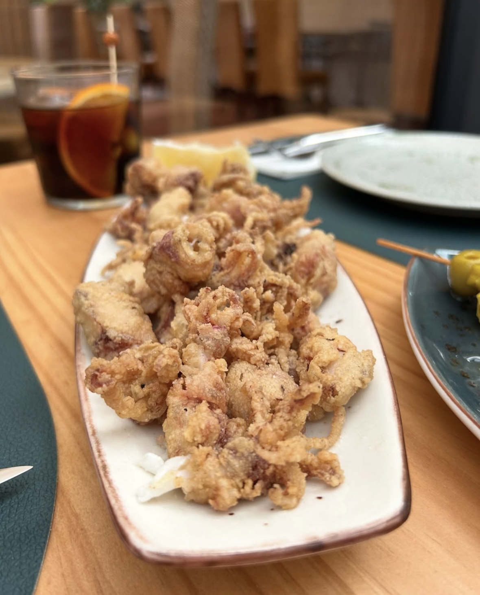

Descubre

Un espacio con alma, piedra y luz mediterránea. Cocina fresca, hamburguesería gourmet, pastas artesanas y los mejores drinks. En el centro de Begur, desde el desayuno hasta la última copa.





